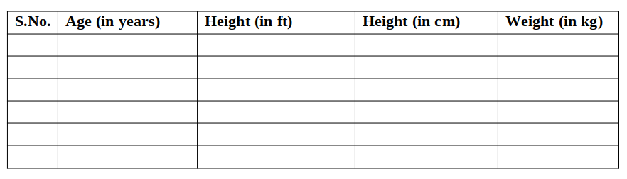
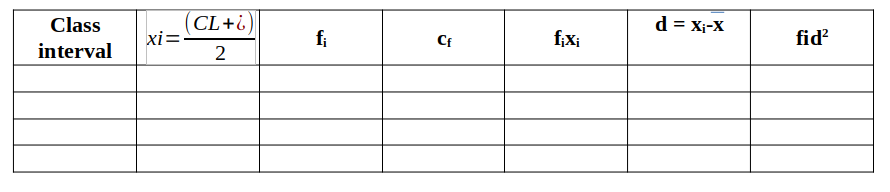

Graphical representation and interpretation of data of height/weight of a sample of 100 humans in relation to their age and sex.
Variation is divergence in the structural or functional characteristics of organisms from a species or population. Genetic variation within species is the ultimate driver of evolution and phenotypic variation.
The variational theory of evolution has a peculiar self defeating property. If evolution occurs by the differential reproduction of different variants, we expect the variant with the highest rate of reproduction eventually to take over the population and all other genotypes to disappear. But then there is no longer any variation for further evolution. The possibility of continued evolution therefore is critically dependent on renewed variation.
Genetic variation is a measure of the genetic differences that exist within a population. The genetic variation of an entire species is often called genetic diversity. Genetic variations are the differences in DNA segments or genes between individuals and each variation of a gene is called an allele. For example, a population with many different alleles at a single chromosome locus has a high amount of genetic variation. Genetic variation is essential for natural selection because natural selection can only increase or decrease frequency of alleles that already exist in the population.
The last three of these factors reshuffle alleles within a population, giving offspring combinations which differ from their parents and from others.
Variation allows some individuals within a population to adapt to the changing environment. Because natural selection acts directly only on phenotypes, more genetic variation within a population usually enables more phenotypic variation. Some new alleles increase an organism's ability to survive and reproduce, which then ensures the survival of the allele in the population.
Other new alleles may be immediately detrimental (such as a malformed oxygen-carrying protein) and organisms carrying these new mutations will die out. Neutral alleles are neither selected for nor against and usually remain in the population. Genetic variation is advantageous because it enables some individuals and, therefore, a population, to survive despite a changing environment.
Some species display geographic variation as well as variation within a population. Geographic variation, or the distinctions in the genetic makeup of different populations, often occurs when populations are geographically separated by environmental barriers or when they are under selection pressures from a different environment. One example of geographic variation are clines: graded changes in a character down a geographic axis.
Gene duplication, mutation, or other processes can produce new genes and alleles and increase genetic variation. New genetic variation can be created within generations in a population, so a population with rapid reproduction rates will probably have high genetic variation. However, existing genes can be arranged in new ways from chromosomal crossing over and recombination in sexual reproduction. Overall, the main sources of genetic variation are the formation of new alleles, the altering of gene number or position, rapid reproduction, and sexual reproduction.
Human morphological variation arises from a number of factors which can be classified as either genetic or experimentally implanted into the process of evolution. Population genetics take care of variation with in a single species or group made up of same species and in case of humans as well.
Body Size
Heritability estimates for the majority of body size measurement entails that
about 80% of the variation in body sizes occurs as the result of genetic factors and about 20% is
due to the environmental factors.
Sexual variation in the body size is typical of humans with female being 90-95% of the sizes of the male in the majority of the populations.
Body Weight:
The majority of the variation in body weight of the humans can be classified into linear build and lateral build.
The extreme linear build is found in the earlier mentioned tall people of the East Central Africa. These people are very tall and slender.
The chest, shoulder and hips are extremely narrow, the narrowest in the world for their height. The limbs are very long, particularly the posterior limbs (legs).
Laterally build people have the tendency to develop leg and broad trunks, with wider chest, shoulder and hips. Their limb bones tends to be short and the legs make less of contribution to overall height. Apaches and many South Americans and Indians exhibit lateral build. On the other hand, lateral build is found in a few Asian and countries mentioned above.
Animation of the experiment:--
Click here to perform the simulation
Upon collecting data of individuals, take a reference of these empty tables. After running the simulator, try to generate your own data for preparing the chart.
Calculation

Observation

The curve obtained is a normal distribution, with the largest number of individuals in the intermediate range, with fewer at each extreme. Galton and Pearson demonstrated that many traits in humans like height and weight are statistically associated between the parents and offspring. In continuous variation, individuals fall into a range of phenotypes. It is studied in a population. The graph depicts continuous variation in the height and weight.
Continous variation is the combined effect of many genes (known as polygenic inheritance) and is often significantly affected by environmental influences. Most traits in animal breeding and agriculture are under polygenic control: Height, weight, stature, muscle composition, milk and egg production, speed, etc. Milk yield in cows, for example, is determined not only by their genetic make-up but is also significantly affected by environmental factors such as pasture quality and diet, weather, and the comfort of their surroundings.
When both environment and genotype influence a trait, it is called a multifactorial trait. Continous variation is controlled by several to many genes. Genes have an additive effect on phenotype. Characteristics showing continous variation can be quantified (measured, counted, weighed, etc.). The traits showing continous variation can be analyzed using statistical tools like mean, mode, median and range. Median and range give information about the frequency distribution, or shape of the curve.Mathematically, phenotypic variance (VP) is the sum of environmental variance (VE) genetic variance (VG) and the interaction of genetics and environment (VGE). The last is usually negligible, so is left out of the calculation.
Heritability is an estimate of how much variability in a population is due to genetic factors, separate from environmental factors. In genetics, statistics are all about determining the relative impacts of heredity vs environment on phenotypic variation. H2 (Heritability) measures the degree to which phenotypic variance (VP) is due to genetic factors.
Heritability (H2), defined most generally as the proportion of the total phenotypic variation that is attributable to genetic factors (technically known as “broad sense” heritability), measures the relative importance of genes in determining phenotypic variance. “Narrow sense” heritability (h2) is the proportion of total phenotypic variation that is due to additive genetic variance and is of particular interest because of its importance in determining the response of a population to natural or artificial selection.
Awareness of the factors underlying variation in quantitative traits is central to an understanding of evolution in natural populations and for predicting responses to selective breeding in agricultural species and disease risk in human.
A heritability index close to 1.0 indicates that environmental conditions had little impact on phenotypic variation in the population observed. A heritability index close to 0 indicates that environmental conditions were almost solely responsible for the phenotypic variation observed in the sample population.